KI für Macherinnen
Vom ersten Satz zur echten Entlastung.
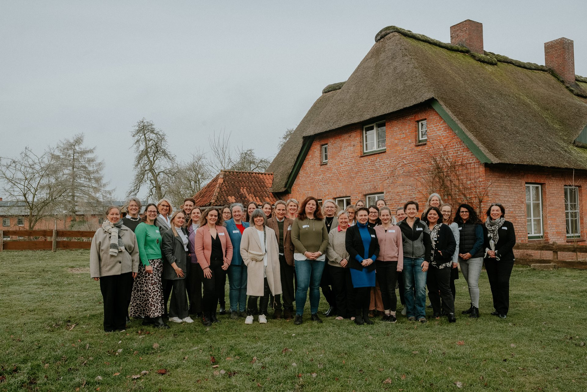
Moin.
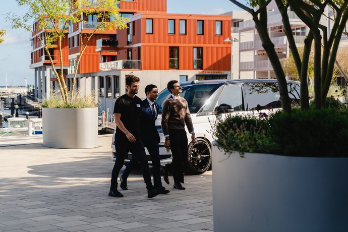
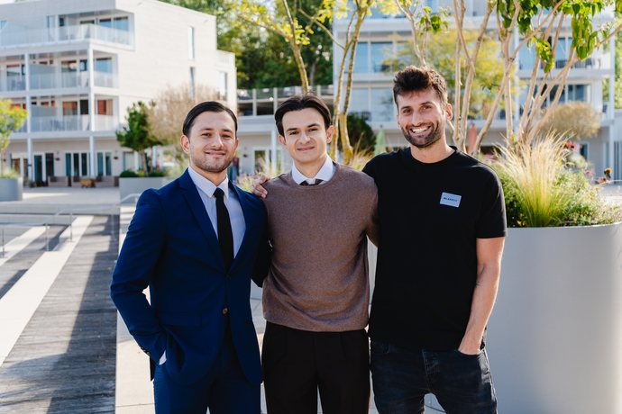
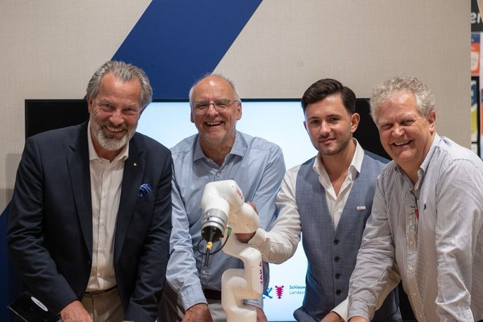
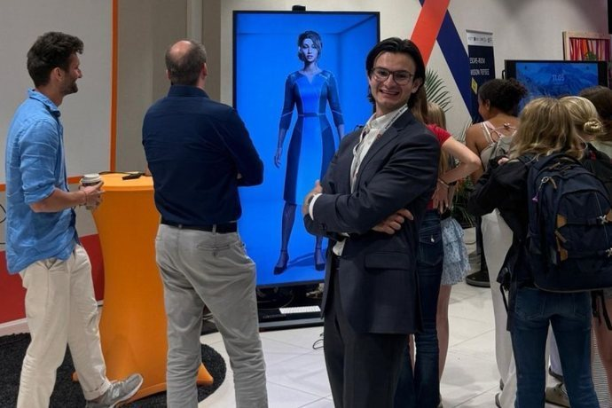
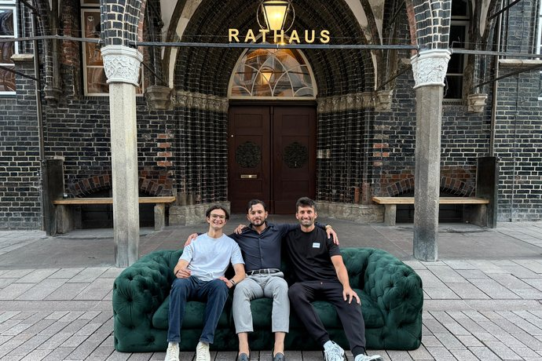
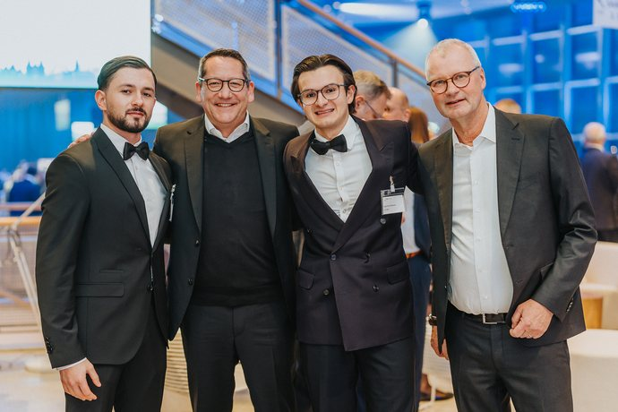
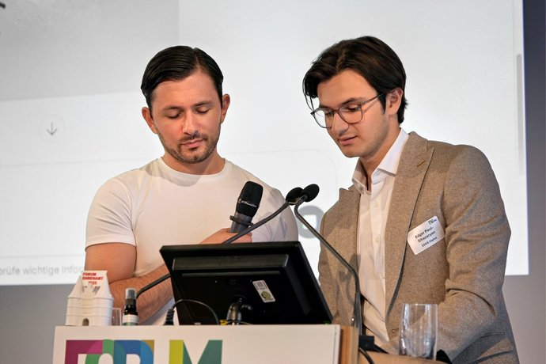
Edgar Paul-Ghazaryan · Emre Erdogan
Drei Zurufe.
Was für ein Laden?
Wo steht er?
Wie heißt er?
Wir sehen uns am Ende wieder.
Zwei Männer erklären einem Raum
voller Unternehmerinnen,
wie Technik geht.
Wir wissen, wie das klingt.
Was heute nicht passiert.
Keine Buzzwords.
Keine Angstmacherei.
Keine Zeitverschwendung.
Drei Teile.
Verstehen.
Machen.
Absichern.
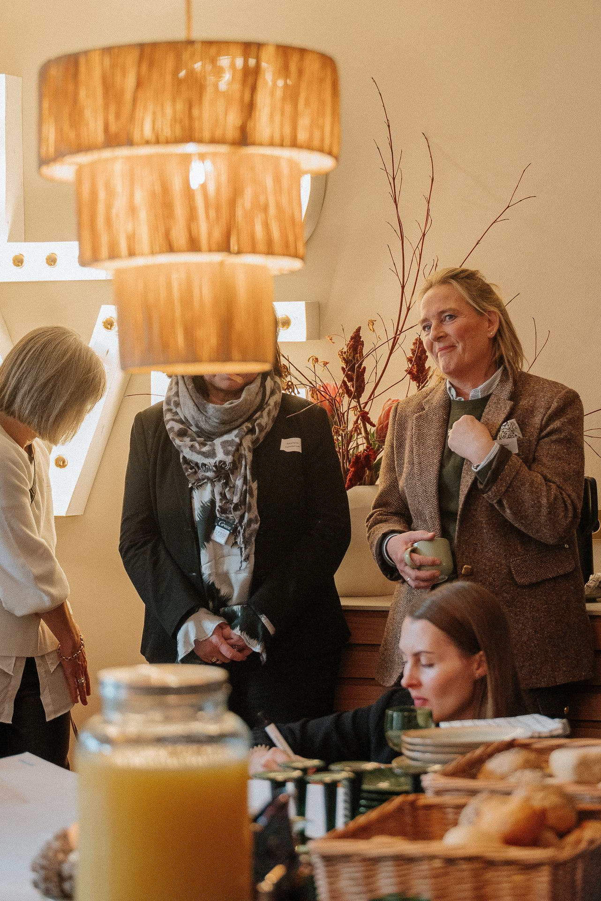
Heute Abend
Die Uhrzeit, zu der bei vielen von Ihnen
der eigentliche Arbeitstag anfängt.
Was um 21:47 Uhr noch liegt.
Nichts davon ist Ihre eigentliche Arbeit.
Sie sind nicht spät dran.
Solo-Selbstständige
nutzen KI
bauen aus
Nicht die Neugier ist das Risiko. Das Warten ist es.
ifo Institut und Jimdo, Juni 2026. Bitkom 2026.
Es gibt genau einen Anfängerfehler.
Man tippt
wie bei Google.
Man redet wie mit
einer neuen Aushilfe.
Einer Aushilfe sagen Sie auch nicht
„Mach mal Angebot" und gehen dann Kaffee holen.
Vier Fragen.
Wer bist du
für mich?
Was soll dabei
rauskommen?
Was musst du
dafür wissen?
Wie soll es
aussehen?
Derselbe Auftrag, zweimal gestellt.
für eine Kundin.
Schreib das Angebot für Frau Petersen.
Vier Räume, Altbau, Einzug im Oktober.
2.400 Euro. Freundlich und kurz.
Vierzig Sekunden mehr Aufwand. Eine Stunde weniger Arbeit.
Teil zwei von drei
Machen.
Drei Aufgaben. Live.
Das Angebot,
das seit Dienstag wartet.
Getippt wird nicht. Es wird gesprochen.
Ihr Handy kann das seit Jahren. Kostenlos.
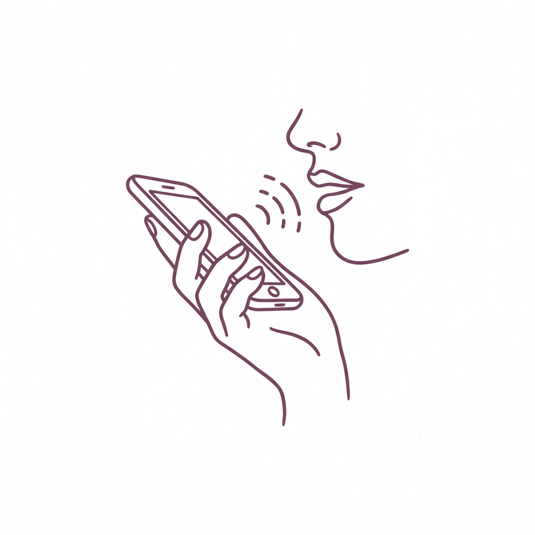
Du bist meine Büroleiterin.
Schreib das Angebot für Frau Petersen.
Vier Räume streichen, Altbau, hohe Decken,
Einzug am ersten Oktober. 2.400 Euro.
Freundlich, kurz, keine Fachwörter.
Der zweite Satz ist der,
auf den es ankommt.
„Naja, nicht ganz meins."
Schreib wie zu einer Kundin.
Letzter Absatz weg.
vorsichtig, klar,
sehr deutlich.
Meckern ist die Technik.
Der Beitrag, den Sie seit
drei Wochen aufschieben.
Ein Foto aus Ihrem Betrieb.
Kein perfektes. Ein echtes.
Wer hat gerade so ein Foto auf dem Handy?
Du machst unseren Instagram-Auftritt.
Hier ist ein Foto aus meinem Betrieb.
Schreib drei Bildunterschriften:
eine persönliche, eine sachliche,
eine mit Augenzwinkern.
Am Ende eine echte Frage.
Die Mail, die Sie seit
Montag im Kopf haben.
Die Absage. Die Mahnung.
Die Antwort auf den unhöflichen Kunden.
Welche Mail schiebt hier gerade jemand vor sich her?
Du bist meine ruhigste Kollegin.
Eine Stammkundin hat seit sieben Wochen
eine Rechnung offen. Ich will sie nicht verlieren.
Hier ist ihre letzte Mail: [ eingefügt ]
Schreib zwei Fassungen:
einmal freundlich mit Frist, einmal deutlich.
Zehn Ideen. Ihr Betrieb.
Du kennst meinen Betrieb:
[ drei Worte von Ihnen ].
Gib mir zehn Ideen für Instagram.
Keine allgemeinen Tipps,
nur was zu genau diesem Betrieb passt.
Das Leichteste zuerst.
Handzeichen: Was würden Sie posten?
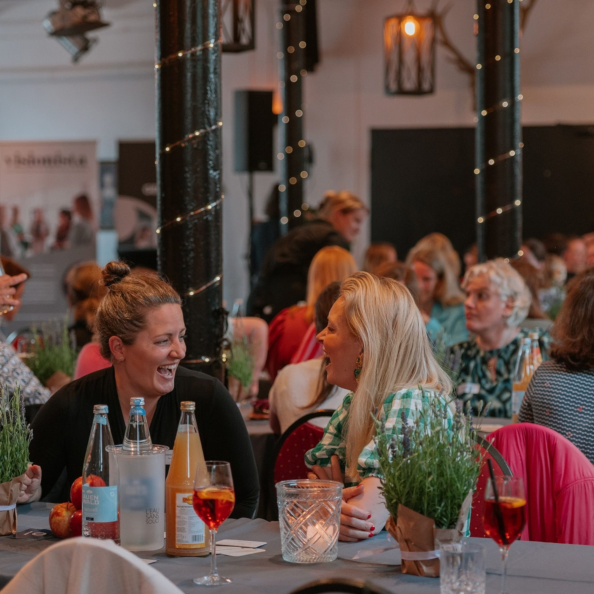
Teil drei von drei · Bevor Sie damit loslegen
Drei Dinge, die Sie
einmal hören sollten.
Beschreiben Sie die Lage.
Nicht die Person.
Bergstraße 12 in Mölln
hat Rechnung 2026-0431
nicht bezahlt.
eine Rechnung offen
und meldet sich nicht.
Das gehört in kein KI-Tool.
„Frau B." statt Frau Behrens.
Wir teilen ein
Geheimnis mit Ihnen.
Was seit dem 2. August gilt.
KI-Bilder
kennzeichnen.
Auch die schönen.
Chatbots
kennzeichnen.
Wenn kein Mensch antwortet.
Was bei Ihnen bleibt.
Der Preis.
Das Ja und das Nein.
Der letzte Blick.
Sie wissen jetzt, wie es geht.
Jetzt sind Sie dran.
An Ideen fehlt es hier nicht.
Ein Ruder-Achter mit zweimal Olympiagold.
Und die Diddl-Maus aus Geesthacht.
Ab heute auch bekannt für Unternehmerinnen,
die KI richtig gut nutzen.
Foto: Oliver Essing, Ratzeburg-Tourismus
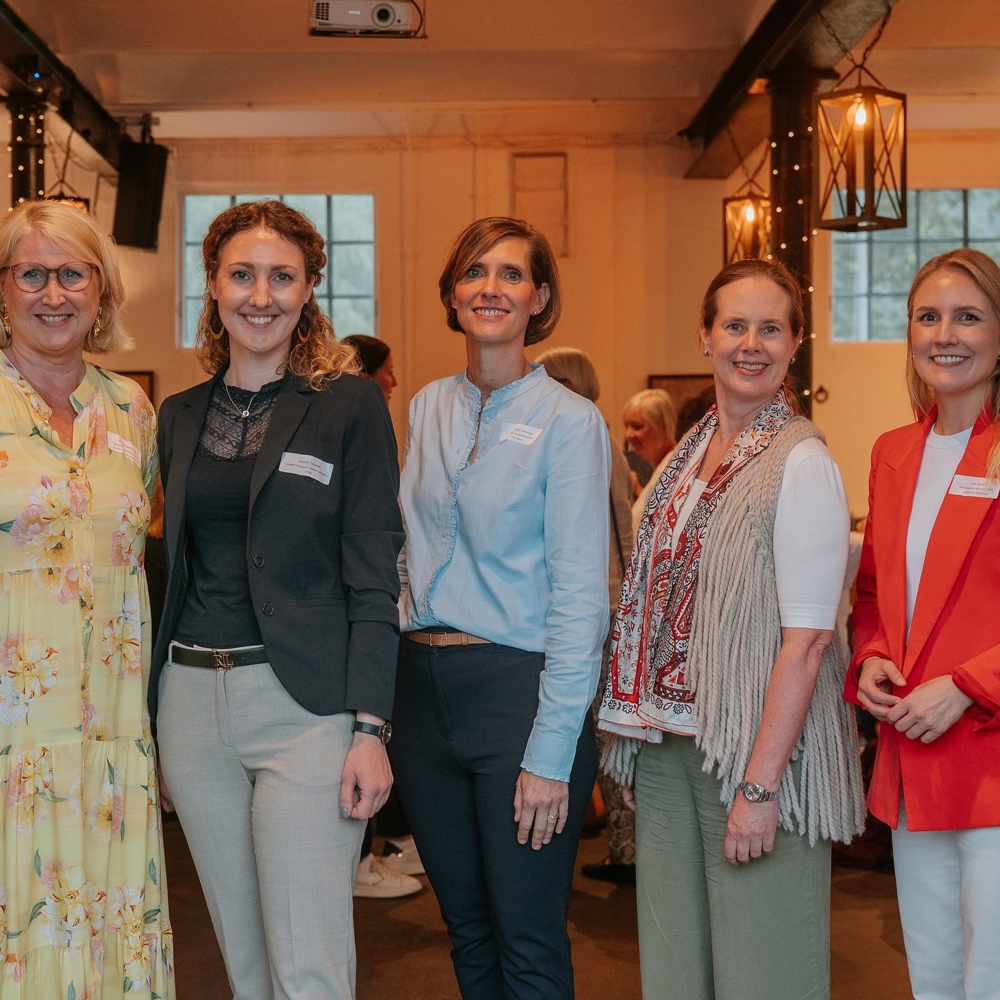
Heute Abend
Das Angebot ist raus. Der Beitrag steht.
Und die Mahnung hat jemand anders angefangen.
Und nebenbei ist das hier entstanden.
Vielen Dank.
Wir sind für Fragen gern zu haben.
EDGE Digital
Fischstraße 16, 23552 Lübeck
info@edge-digital.ai
Fotos: Franzi Schädel Fotografie und Bildarchiv der WFL.
Luftbild Ratzeburg: Oliver Essing, Ratzeburg-Tourismus.
Die Zeichnungen sind mit KI entstanden.
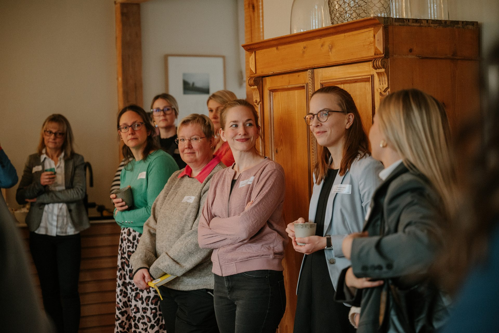